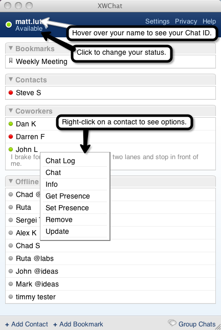
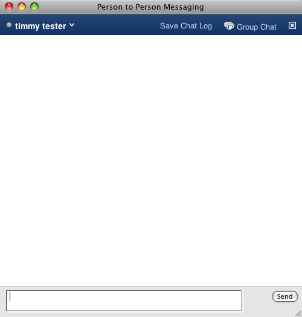
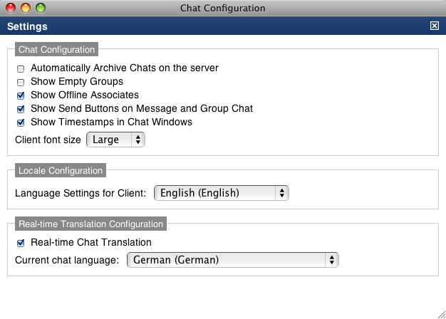
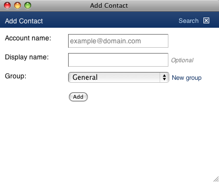
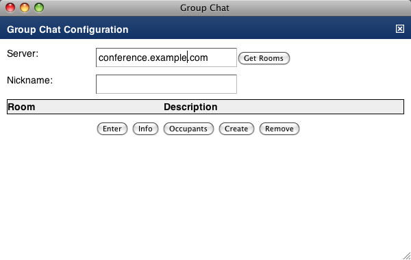
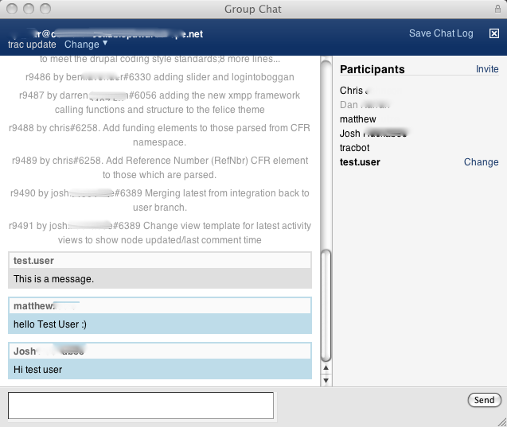
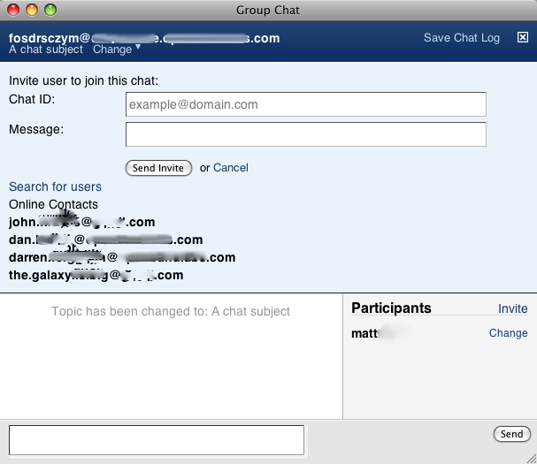

Words to know
To make this document easier to use, we'd like to first introduce a few words, used frequently, that are important when discussing chat applications.
- Chat (noun): a real-time, online conversation between two or more people. EX: "The chat yesterday was very productive."
- Chat (verb): participating in a real-time, online conversation between two or more people. EX: "Let's chat about this instead of having a long email chain."
- Multi-User Chat (noun): a Chat that involves more than two people. Abb. MUC, Synonyms: Group Chat. EX: "We have a MUC scheduled for tomorrow at 13:00 EST, don't be late."
- Chat server: this will refer to the software and Web address through which a chat client sends and receives messages. EX: "Tomorrow's MUC will be on our internal chat server, xmpp://conference.ourserver.example"
- Chad ID: the unique address that identifies a person registered on a chat server, in the format "name"@"chat_server". You will use this to send messages to another person. Synonyms: JID. EX: "Add me to your contact list; my chat ID is matt@ourserver.example."
- Contact: a person with a Chat ID, registered on a chat server, that can participate in chats. Synonyms: User. EX: "How many users are in your contact list?"
- Contact List: a list that is maintained by your chat server and stores the Chat IDs of your contacts. EX: "I have 34 contacts saved in my contact list."
- Contact Group: an object used to organize the contacts in your contact list. EX: "I have my contacts split into three groups: Family, Co-workers, and Clients."
- XMPP: is an acronym for Extensible Messaging and Presence Protocol. It is a system that allows people to send each other chat messages on the Internet. Anyone who has an XMPP chat ID and is using a chat client (like XWChat) can communicate with other people who meet the same criteria.
The Contact List

The contact list shows you the chat users you have established connections with. The list will tell you if they are available, away, or offline, and allows you to group your contacts to make finding them in your list easier. The contact list has a right-click menu for each contact, allowing you to perform actions including update their status, viewing their chat profile (vCard) information, or removing/updating them from/on your list.
The chat window

Communication happens through the chat window. When you either left-click on a person in your contact list, right-click on the person and then choose "chat", or receive a message from another user, XWChat will open a chat window. From inside the chat window, you can:
- Send and receive chat messages
- Start a group chat with the person to whom you're chatting
- Save a copy of the chat conversation, and
- Interact with them through their user-context menu.
The group chat window allows you to talk with many people at once. The group chat window offers the same features as the one-on-one chat window, along with the ability to:
- Invite additional participants
- Set and change the group chat's status message, and
- Change your display name.
Settings

XWChat offers a customizable chat experience free from the clutter presented in many popular clients. "Settings" allows a user to customize some of the ways they interact with XWChat. These settings include:
- Chat Configuration
- Automatically Archive Chats on the server: Will publish a copy of each chat you participate in to your account on the site.
- Show Empty Groups: Tells the contact list to show contact groups, even if you have no users in them.
- Show Offline Associates: By default, XWChat hides users in your contact list who are offline and inaccessible. You may change this default so that every person in your contact list is displayed, whether or not they are online.
- Show Send Buttons on Message and Group Chat: Striking the "Enter" key on your keyboard duplicates the function of the Send Button. Some users prefer to hide the send button so that they have a wider typing area in their Chat windows.
- Show Time stamps in Chat Windows: Selecting this option will show (next to the User name) the date/time each message in a conversation was sent or received.
- Client font size: This option increases or decreases the size of the text for all of the windows in XWChat.
- Language Settings for Client: The language selected in this option tells XWChat what language you are chatting in, as well as the language in which you want XWChat to display the application's text.
- Real-time Translation Configuration
- Real-time Chat Translation: Use this option to tell XWChat if it should translate incoming text into another language.
- Current chat language: This is the language into which XWChat will translate incoming messages.
Open the client
By default, site administrators are requested to include a "launch" button somewhere on their site. Often this will be the page that loads when you log in. Once you have loaded the "launch" button, mouse-click once and the chat application will open.
Edit your Profile
In XWChat, your profile, or "VCard", is accessed by clicking on your chat ID on the top of the contact list.
In the Contact List, when you hover your mouse pointer over your chat ID, the window will display your Chat ID (i.e. joe@chat.someaddress.com). Click on your username, and a new window will open. It will be titled "Update VCard." Change or add information to the fields in the window. When you are finished, scroll to the bottom and click "Save."
Your profile information is now updated and you may close the VCard window.
Set your availability status
Setting your availability status helps tell your contacts if you're available to chat with them. To change your availability status, first select your chat client window. Next, click on the status message below your user name. A panel will slide open revealing the pre-configured options available to you.
You may chose one of the already-available options (Available, Chat, Away, Busy, or Invisible). Or, you may click on "Custom" in either the available row (green dot) or the not-available row (red dot). Enter the message you would like your chat contacts to see when they check on your availability, then press the "Enter" key.
When finished (either by clicking on an option or pressing the "Enter" key after typing a custom message), the availability box will roll up and your new status will be displayed below your user name, as well as in your contacts' personal contact lists.
Add a user to your contact list

To add contacts to your list:
- Launch the application.
- Click on the link in the bottom-left of the chat roster, labeled "Add Contact".
- Fill in their "Account name." This can be any chat account built on a technology called ejabberd. Jabber, Google Chat, your site, and many other Web services offer ejabberd chat accounts.
- You may optionally list a display name for the contact.
- Choose a group to list the new contact in.
- Mouse-click "Add" to save the new contact.
The list will refresh and add the new contact to your contact list.
Remove a contact from your contact list
To remove a contact from your list:
- Launch the application.
- Right-click on the user you wish to remove from your contact list.
- Click on the option "Remove."
- Click "OK" in the alert window that opens.
The list will refresh and the user will no longer be in your contact list.
Managing contact groups
To move a contact to a new contact group:
- Right click on the contact you want to move. A menu will open.
- Locate "Update" and click the link.
- If you want to move the contact to a group that already exists, scroll through the list next to "Group: " and click it.
- If you want to move the contact to a new group,
- Click the "New group" link.
- Type the name you want to give the new group.
- Finally, click the "Update" button on the bottom of the "Update User Details" window.
The list will refresh and the user will be moved to the new group you selected.
Start a conversation
Open the chat application.
- Once the application is open, you will see a "chat roster" with the names of your contacts.
- Click on a contact name to open a message window, then click in the message field (white, wide rectangular box on the bottom of the window) and begin typing.
- You may send your message by either striking the "Enter" key or by clicking "Send" to the right of the message field.
Handling multiple windows
(Holding space for future feature)
Saving a chat conversation
Clicking "Save Chat Log" on top of the chat window allows you to save a copy of the conversation as a post on the site.
- At the top of the window, click "Save Chat Log."
- A browser page will load. Check that the list of attendees is displayed correctly, and that the parts of the chat conversation you wish to save are present in the body of the page.
- Choose the applicable audiences, attach any files necessary, then click "Save" to publish the conversation.
Join a MUC

- Click the [Group Chat] button on the bottom right of the window.
- The chat server for your site will be preloaded in the "Server" field. Click "Get Rooms" to see the MUC rooms available to join.
- NOTE: If you wish to join a room in another chat server, you will need to replace the pre-loaded info with the address of the server you wish to join. You need to know this information to find rooms in a different server.
- Left-click on a room in the generated list, then scroll to the bottom and click "Enter" to join the MUC.
- Optional: If you question that a room is the MUC you are looking for, clicking "Info" after selecting a room will display some information about the room.
- Optional: If you would like to see which users are in a room before entering it, clicking "Occupants" after selecting a room will display a list of the users currently chatting and their chat ID's.
Start a MUC

MUCs can be started two ways. If you start from the contact list:
- Click the [Group Chat] button on the bottom right of the window.
- Select the [Create] tab at the top of the group session window.
- Enter a nickname, then at least a Room title for the chat room you wish to create and click the "create" button.
- NOTE: By default, the chat server will delete a MUC room if no participants are using it. To keep a room, even if it has zero participants, select "yes" next to the option "Make room persistent:".
- When creating a Group Chat room, many options are presented. Feel free to set any options available to you. Once a group is created, you may not edit these settings, so if you wish to change settings in the future, you will need to remove the group from the chat server and re-create it with your new settings.
If you start from a one-on-one chat window:
- Click the [Group Chat] button on the bottom right of the chat window
- A group chat session will be created, with you and the person you were chatting as group chat session members.
Inviting more participants

NOTE: You can find the Chat ID for users in your contact list by right-clicking on their name and choosing "Info." The Chat ID will be next to "User Details" at the top of the new window.
From within a MUC, you can send invitations to other people and ask them to join the conversation. To do so:
- Move your cursor to the Participants list. Click the link titled "Invite" at the top.
- If you know the person's chat ID:
- Enter the Chat ID of the person to whom you would like to send the invitation.
- Optionally, you may enter a message that will accompany the invitation.
- If you do not know the person's chat ID:
- You may try searching for persons that have accounts on the site. Click "Search for users".
- Enter information you know about the person into the provided fields.
- NOTE: You will have the greatest chance of success if you start with general information (family name) and add info to narrow the search results.
- Click on the "select" icon (looks like a check mark) to select a user.
- Click "Send Invite" and the user will be alerted to your invitation to join the MUC.
NOTE: For functions that would require you to be using XWChat, please assume that the first step is opening the client.
How do I change a MUC status message?
- Locate the MUC address in the top-left corner of the window.
- Click the link "Change" to reveal the status message edit field.
- Delete the current message and type a new message into the field.
- Strike the [enter] key on your keyboard to submit the new status message.
How do I set my presence status?
There are five pre-configured options you may choose:
- Available: This tells others you are connected to the Internet and logged on to XWChat.
- Chat: You are connected to the Internet/logged on to XWChat and ready for conversations.
- Away: You are connected to the Internet, logged on to XWChat but are not at your computer.
- Busy: You are connected to the Internet, logged on to XWChat but you are not available for conversations.
- Invisible: You are connected to the Internet, logged on to XWChat and can see which of your contacts are online. You will appear offline to your other contacts.
- Offline: You are not logged on to XWChat.
You may also enter a custom status message by clicking "Custom", typing your custom status message in the provided box, and striking the "Enter" key on your keyboard.
How do I automatically archive my chat conversations?
To turn on automatic chat archiving:
- Click the “Settings” link on the top right of the chat client.
- Click the checkbox next to the option “Automatically Archive Chats on the server.”
- Close the Settings window.
How do I show contact groups that have no members in my contact list?
To show empty contact groups:
- Click the “Settings” link on the top right of the chat client.
- Click the checkbox next to the option “Show Empty Groups.”
- Close the Settings window.
How do I show/hide contacts who are offline or not logged into chat?
To show offline contacts:
- Click the “Settings” link on the top right of the chat client.
- Click the checkbox next to the option “Show Offline Associates.”
- Close the Settings window.